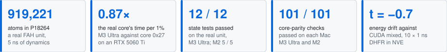
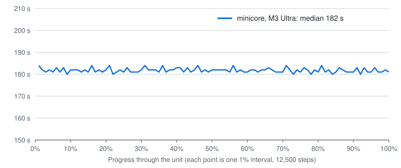

fah-core-metal
A Folding@home core that runs real FAH work units on Apple Silicon GPUs through OpenMM's Metal platform.

minicore is a Folding@home core for Apple Silicon Macs. It folds FAH's OpenMM work units on the Mac's GPU with OpenMM's Metal platform in df64 mixed precision, and writes the result files FAH's CUDA core 0x27 writes. On one real unit, project 18264 with 919,221 atoms, the M3 Ultra takes 0.87 times core 0x27's time per 1% on an RTX 5060 Ti. Its state-test errors sit beside CUDA mixed precision's, and in 10 runs its energy drift can't be told apart from CUDA mixed's.
Runs on Apple Silicon Macs (M-series GPUs) through Metal. Tested on the M3 Ultra and the M2.
Background: openmm#2489, "Future of osx GPU support" (2019-11-28), and fah-client-bastet#303, "Support for Apple's integrated GPUs" (2024-11-05).

Results at a glance
| Result | Shown in |
|---|---|
| On P18264 the M3 Ultra takes 167 s per 1% and 4.66 h per unit. Core 0x27 on an RTX 5060 Ti takes 192 s and 5.37 h. | Figures 2, 3 |
| The Metal trajectory parts from the real one as fast as two CUDA seeds part from each other: 0.475 nm against 0.481 nm at step 5,000. | Figure 4 |
| A CUDA replay samples the real run's box volume, 9,307.1 nm³ mean for both, so the trajectories that part still sample one ensemble. | Figure 5 |
| On four test systems the worst state-test force RMSE is 0.054 kJ/mol/nm on Metal and 0.052 on CUDA mixed, against a limit of 5. | Figure 6 |
| Energy drift in NVE is -0.0010 ± 0.0006 kJ/mol/ps on Metal and -0.0001 ± 0.0011 on CUDA mixed (Welch t -0.7). | Figure 7 |
| 17 of 25 files and behaviours match core 0x27 on both Macs. 6 differ where FAH's design decides, and 2 need FAH's keys. | Figure 8 |
| 101 of 101 core-parity checks pass on each Mac, and every state test on the real unit passes. | What was tested |
Speed


Does it fold the same science?


Accuracy and energy conservation


How it matches

The source, the build, the full tables, every caveat and the evidence for each number are in the repository: the README and docs/EVIDENCE.md.